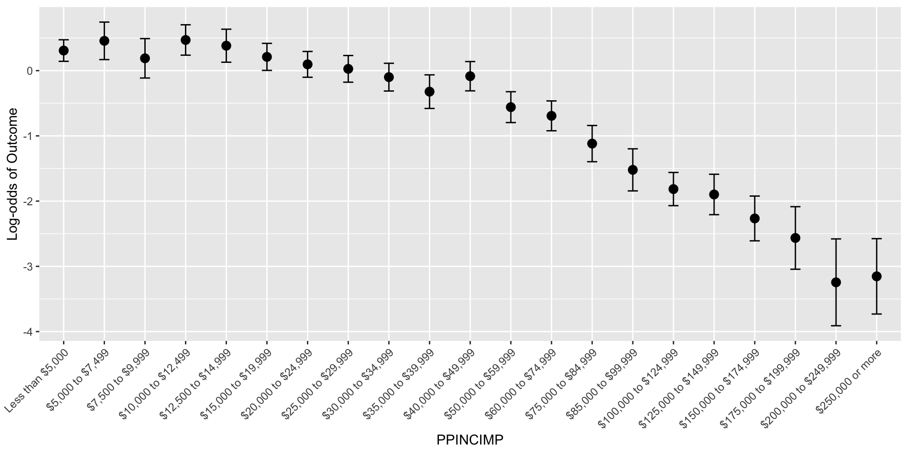
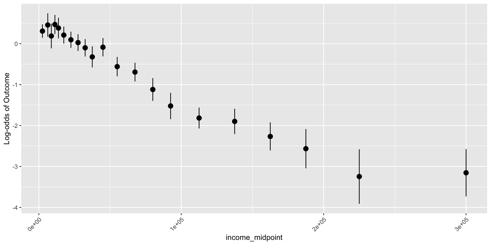

2026-04-29
To convert a categorical variable to numeric, we need to convince ourselves that the categorical variable has a linear relationship with the log-odds of food insecurity
How do we do that?
When we treat a predictor as continuous, we need to make sure we have linearity between the predictor and log-odds
Easier to test this by fitting a logistic regression with the predictor
Test linearity by fitting logistic regression with the predictor, then visually examining if predicted log-odds follows roughly linear pattern
PPINCIMP and FOOD_INSECpredict() to calculate the log-odds for each categorynewdata = data.frame(PPINCIMP = levels(wbns3$PPINCIMP))
pred = predict(income_glm, newdata, se.fit=T, type = "link")
pred_link = data.frame(PPINCIMP = levels(wbns3$PPINCIMP),
Pred = pred$fit,
LL_CI1 = pred$fit - qnorm(1-0.05/2) * pred$se.fit,
UL_CI1 = pred$fit + qnorm(1-0.05/2) * pred$se.fit) %>%
mutate(PPINCIMP = factor(PPINCIMP, levels = levels(wbns3$PPINCIMP)))
wbns4 <- wbns3 %>%
mutate(income_midpoint = case_when(
PPINCIMP == "Less than $5,000" ~ 2500,
PPINCIMP == "$5,000 to $7,499" ~ 6250,
PPINCIMP == "$7,500 to $9,999" ~ 8750,
PPINCIMP == "$10,000 to $12,499" ~ 11250,
PPINCIMP == "$12,500 to $14,999" ~ 13750,
PPINCIMP == "$15,000 to $19,999" ~ 17500,
PPINCIMP == "$20,000 to $24,999" ~ 22500,
PPINCIMP == "$25,000 to $29,999" ~ 27500,
PPINCIMP == "$30,000 to $34,999" ~ 32500,
PPINCIMP == "$35,000 to $39,999" ~ 37500,
PPINCIMP == "$40,000 to $49,999" ~ 45000,
PPINCIMP == "$50,000 to $59,999" ~ 55000,
PPINCIMP == "$60,000 to $74,999" ~ 67500,
PPINCIMP == "$75,000 to $84,999" ~ 80000,
PPINCIMP == "$85,000 to $99,999" ~ 92500,
PPINCIMP == "$100,000 to $124,999" ~ 112500,
PPINCIMP == "$125,000 to $149,999" ~ 137500,
PPINCIMP == "$150,000 to $174,999" ~ 162500,
PPINCIMP == "$175,000 to $199,999" ~ 187500,
PPINCIMP == "$200,000 to $249,999" ~ 225000,
PPINCIMP == "$250,000 or more" ~ 300000
))newdata = data.frame(PPINCIMP = levels(wbns4$PPINCIMP))
pred = predict(income_glm, newdata, se.fit=T, type = "link")
pred_link = data.frame(PPINCIMP = levels(wbns4$PPINCIMP),
income_midpoint = sort(unique(wbns4$income_midpoint)),
Pred = pred$fit,
LL_CI1 = pred$fit - qnorm(1-0.05/2) * pred$se.fit,
UL_CI1 = pred$fit + qnorm(1-0.05/2) * pred$se.fit) %>%
mutate(PPINCIMP = factor(PPINCIMP, levels = levels(wbns4$PPINCIMP)))
Lab 2: Feedback and Discussion